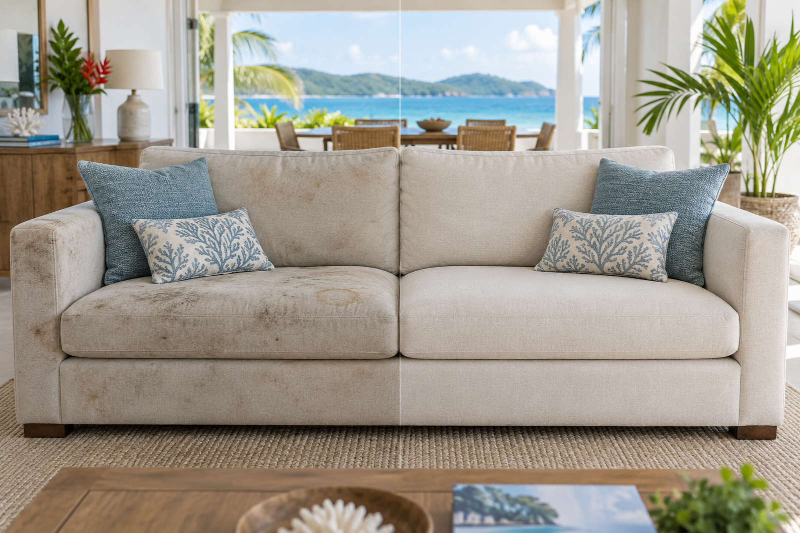

Canapés
Nettoyage des assises, dossiers et zones sollicitées pour traiter salissures, auréoles et odeurs selon l’état du tissu.
Nettoyage textile à domicile • Martinique
Canapés • Matelas • Fauteuils • Tapis • Chaises
Vos textiles propres, frais et soignés sans les déplacer. MADYCLEAR intervient par injection-extraction, diagnostique le support et annonce le prix avant l’intervention.

Priorité textile
MADYCLEAR concentre actuellement son activité sur le nettoyage textile à domicile et sur site professionnel : mobilier, literie, tapis et assises.
Intervention sur rendez-vous en Martinique, selon les disponibilités du planning.
Prestations actuelles
Chaque textile est contrôlé avant traitement. L’injection-extraction et le détachage sont adaptés à la matière, à l’état du support et au type de salissure.
Nettoyage des assises, dossiers et zones sollicitées pour traiter salissures, auréoles et odeurs selon l’état du tissu.
Nettoyage en profondeur des surfaces textiles pour retrouver un couchage plus propre et plus frais.
Traitement adapté aux fibres et au niveau d’encrassement, avec diagnostic préalable.
Nettoyage des fibres selon la matière, les dimensions et l’état général du tapis.
Nettoyage ciblé des assises et dossiers rembourrés, idéal en complément d’une intervention.
Prestations textiles pour conciergeries, locations saisonnières, commerces et entreprises, sur devis selon volume.
Tarification officielle
Les tarifs ci-dessous correspondent à la grille MADYCLEAR en vigueur. Si l’état, les dimensions ou la matière nécessitent un traitement particulier, tout ajustement est annoncé avant intervention.
Simple et transparent
Envoyez le type de textile, quelques photos, les dimensions approximatives et les taches ou odeurs à traiter.
MADYCLEAR vérifie la demande, précise le tarif et confirme le créneau avant déplacement.
L’injection-extraction et le détachage sont adaptés à la fibre. Après nettoyage, vous recevez les recommandations utiles pour le séchage.
Avant / après
Le résultat dépend de la matière, de l’ancienneté des taches et de l’état du textile. Certaines marques peuvent être permanentes : le diagnostic sert justement à définir ce qui est raisonnablement traitable.

Questions fréquentes
MADYCLEAR intervient à domicile ou sur site professionnel partout en Martinique, sur rendez-vous et selon les disponibilités.
La grille officielle est affichée sur cette page. Si les dimensions, la matière ou l’état nécessitent un traitement particulier, tout ajustement est annoncé avant l’intervention.
Non. Il dépend de l’éligibilité de la prestation, du client et du dispositif applicable. MADYCLEAR ne le présente donc que comme un avantage potentiel.
Non, aucune entreprise sérieuse ne peut garantir l’élimination de toutes les taches. La réaction dépend de la fibre, du produit à l’origine de la tache et de son ancienneté.
Le délai varie selon la matière, l’aération et l’humidité. Les recommandations sont données après l’intervention.
Les demandes et interventions sur rendez-vous sont possibles du lundi au samedi de 7 h à 22 h et le dimanche de 7 h à 12 h, selon les disponibilités.
Envoyez sur WhatsApp des photos d’ensemble et de près, les dimensions, votre commune et la nature des taches ou odeurs. Le devis est gratuit et confirmé avant l’intervention.
Devis gratuit
Le formulaire prépare un message WhatsApp avec les informations utiles. Vous pourrez ensuite ajouter les photos du textile directement dans la conversation.